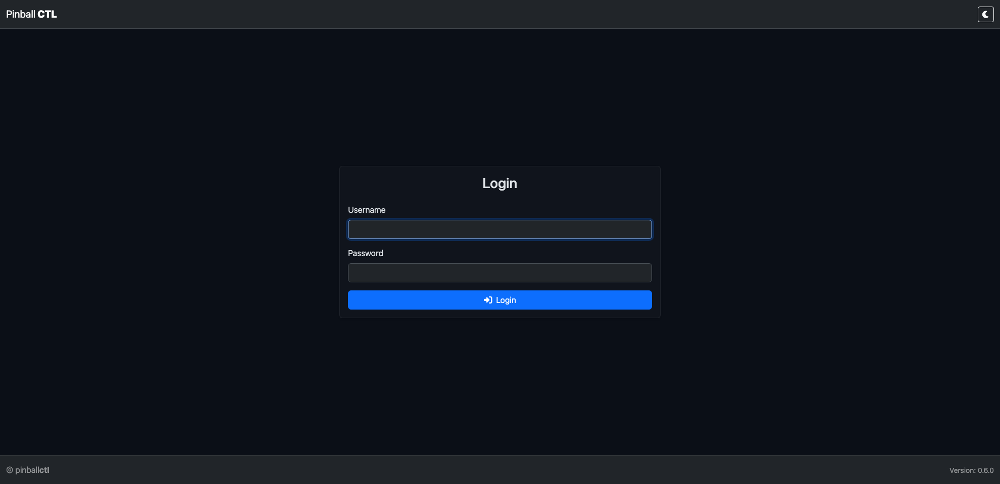
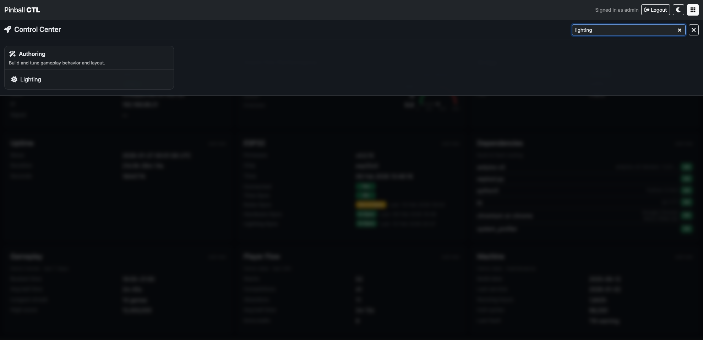
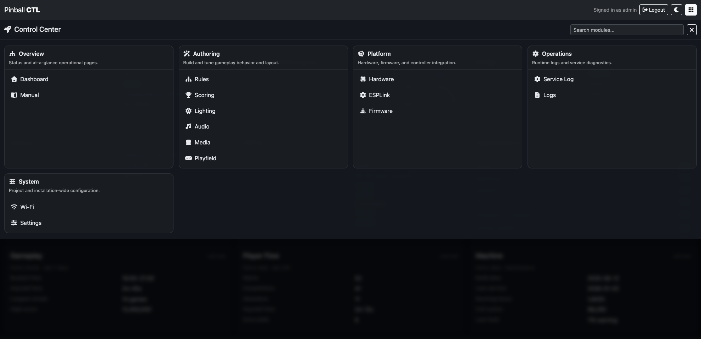
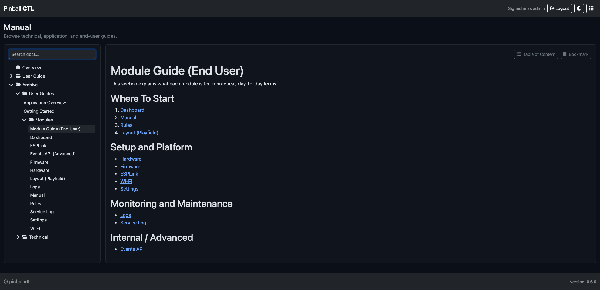
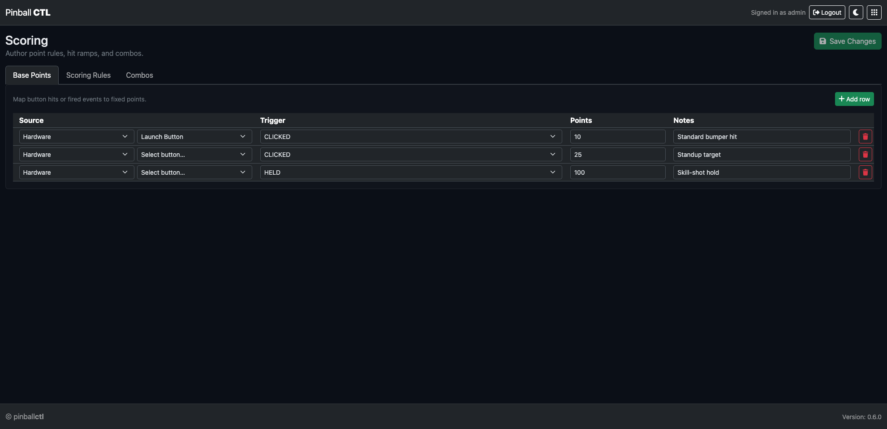
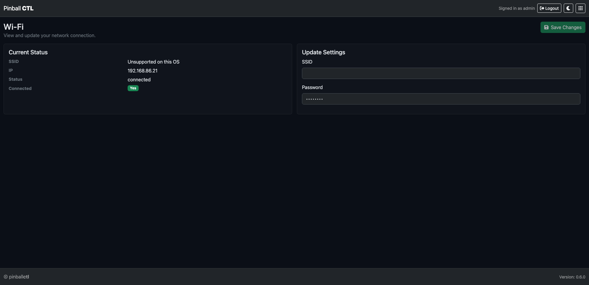
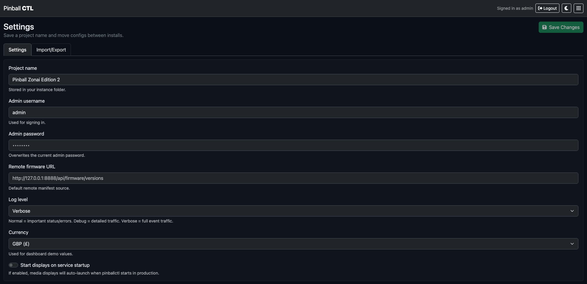
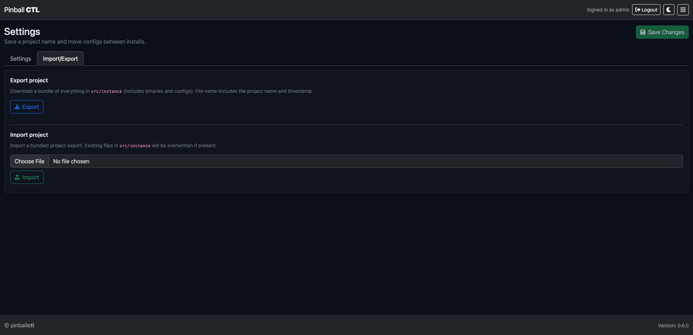
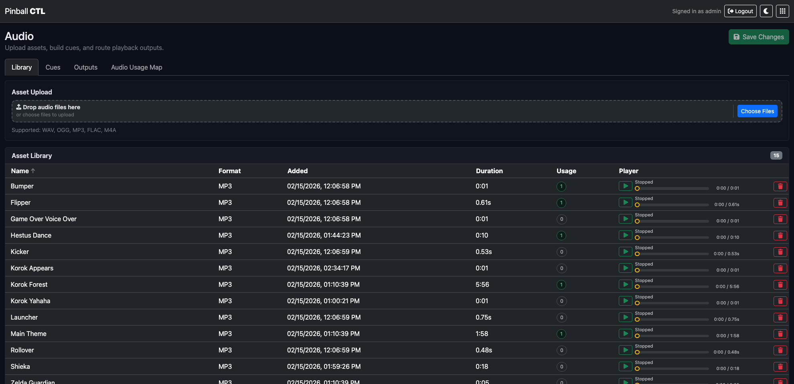
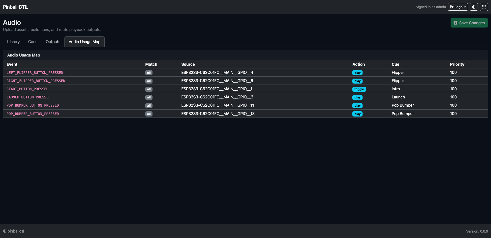

Full User Guide
Pinball CTL Documentation
This is the full in-app User Guide content, published for online viewing with section navigation and enlargeable screenshots.
Getting Started
This guide helps you get Pinball CTL running from a clean Raspberry Pi setup.
It is written for real-world first installs, not just developer machines.
Before You Start
Pinball CTL is under active development. It runs well on the hardware used in this project, but it has not yet been broadly tested across all Raspberry Pi and peripheral combinations.
In plain terms: if your setup is different, your mileage may vary.
Requirements
The table below shows what is required and what has been tested in this project.
| Item | Required | Tested | Notes |
|---|---|---|---|
| Raspberry Pi 5 | ✅ | ✅ | Main target platform |
| ESP32-S3 controller board | ✅ | ✅ | Real-time I/O and safety layer |
| microSD card (32GB recommended) | ✅ | ✅ | Raspberry Pi OS and local storage |
| Stable Pi power supply | ✅ | ✅ | Use a suitable PSU for Pi 5 |
| USB data cable (Pi <-> ESP32-S3) | ✅ | ✅ | Must be a data cable, not charge-only |
| Network connection (Ethernet or Wi-Fi) | ✅ | ✅ | Needed for package install and web UI access |
| Raspberry Pi OS 64-bit | ✅ | ✅ | Recommended by Raspberry Pi for Pi 5 |
| Python 3.11+ | ✅ | ✅ | Required by Pinball CTL |
python3-venv | ✅ | ✅ | For isolated environment install |
pip | ✅ | ✅ | Package installation |
git | ⚠️ If installing from Git URL | ✅ | Needed for tag-based Git install |
| macOS dev machine | ❌ | ✅ | Development was done on macOS; runtime target is Pi |
| Web browser (Chrome, Edge, Safari, Firefox) | ✅ | ✅ | For Pinball CTL web interface |
For hardware-specific status, see:
Prepare Raspberry Pi OS
Start with a clean Raspberry Pi OS image and flash it to your SD card.
Official Raspberry Pi references:
Recommended for Pi 5:
- Use the current recommended Raspberry Pi OS (64-bit) entry in Raspberry Pi Imager.
- As of 4 December 2025, Raspberry Pi lists Raspberry Pi OS 64-bit based on Debian 13 (Trixie) for Pi 5.
Tip:
- Raspberry Pi Imager is the quickest way to get started for most users.
- In Raspberry Pi Imager, open OS customisation before writing the card.
- Preconfigure Wi-Fi, username/password, locale, and SSH so these settings are baked into the image for easier remote setup.
Boot and Connect to the Pi
You can continue setup in either of these ways:
- SSH from another machine (recommended for headless setups).
- Directly on the Pi using keyboard + monitor.
Option A: SSH
If SSH was enabled in Imager:
ssh <your-user>@raspberrypi.localIf mDNS is not available on your network, use the Pi IP address instead:
ssh <your-user>@<pi-ip-address>Option B: Keyboard + Monitor
Log in locally and open Terminal.
Install Pinball CTL in a Virtual Environment
Run the following on your Pi.
Install base tools
sudo apt update
sudo apt install -y python3-venv python3-pip gitCreate and activate a venv
mkdir -p ~/pinballctl
cd ~/pinballctl
python3 -m venv .venv
source .venv/bin/activate
python -m pip install --upgrade pipInstall from a Git tag (recommended)
If you know the release tag:
python -m pip install "git+https://github.com/VineCode/pinballctl.git@vX.Y.Z"If you want to resolve and install the latest tag automatically:
REPO_URL="https://github.com/VineCode/pinballctl.git"
LATEST_TAG="$(git ls-remote --refs --sort='version:refname' --tags "$REPO_URL" | tail -n1 | sed 's|.*refs/tags/||')"
python -m pip install "git+$REPO_URL@$LATEST_TAG"Then verify:
pinballctl --versionNote:
- Packaging in this project is wheel-based (see release/build scripts and
pyproject.toml). - Installing from a tag gives you a reproducible version aligned to a release point.
Run Pinball CTL
For most users, this is all you need:
pinballctl startThis starts Pinball CTL with the default runtime setup.
You can check status at any time:
pinballctl statusAdvanced:
- If you need manual control of individual services and options, use:
pinballctl --helpOpen the Web Interface
From a browser on your network, open:
http://<pi-ip-address>:8888If local hostname resolution works on your network, this may also work:
http://raspberrypi.local:8888You should see the Pinball CTL login screen in your browser:
Default login credentials:
- Username:
admin - Password:
password
For safety, change the default password as soon as you log in.
Optional: Run as Services
For auto-start on boot and easier long-running use:
pinballctl service install
pinballctl service start all
pinballctl statusCommand Overview
Use pinballctl --help at any time for the full command tree.
| Command | What it does |
|---|---|
pinballctl start | Starts Pinball CTL with the default runtime setup |
pinballctl status | Shows system, service, network, and port status |
pinballctl --version | Shows installed Pinball CTL version |
pinballctl --help | Shows top-level help |
pinballctl web --help | Shows web command options |
pinballctl bridge --help | Shows bridge command options |
pinballctl service install | Installs and enables systemd services |
pinballctl service start all | Starts web + bridge services |
pinballctl service restart all | Restarts all services |
pinballctl service --help | Shows service command options |
Troubleshooting Quick Checks
If something is not working, check these first:
- Is your venv active (
source .venv/bin/activate)? - Does
pinballctl --versionwork? - Is the web app running on port 8888?
- Is your Pi reachable on the network?
Interface Tour
This page gives you a quick tour of the Pinball CTL interface so you can find what you need fast.
Login
Open Pinball CTL in your browser and sign in.
Default login credentials:
- Username:
admin - Password:
password
Change the default password after your first login via System -> Settings.
Dashboard Overview
After login, you land on the Dashboard. This is your at-a-glance machine status page.

The dashboard cards show key status areas such as Wi-Fi, bridge state, ESP32 connectivity, dependencies, uptime, and gameplay or machine metrics.
Use this page first when checking whether your system is healthy.
Control Centre
Use the grid icon in the top bar to open the Control Centre. This is the main navigation hub for all areas.

The Control Centre groups pages by purpose:
- Overview: high-level operational pages.
- Authoring: Rules, Lighting, and playfield-related work.
- Platform: hardware, firmware, and ESPLink.
- Operations: logs and service diagnostics.
- System: settings such as Wi-Fi and install-wide options.
Search
Use the search box (top right of Control Centre) to filter the available pages.
Search is best when you type the page name directly, for example: lighting, rules, hardware, or manual, then click the page you want.
Recently Visited
Pinball CTL keeps quick shortcuts so you can get back to pages you use most.
The Recently Visited row gives one-click access to pages you opened recently.
Bookmarks
When you hover over a link, a yellow bookmark icon appears.
Clicking the icon adds that link to the top bookmarks menu for faster access to frequently used areas.
You can also drag and drop items in the top bookmarks menu to arrange them in your preferred order.
Features
This page gives you a full overview of the main Pinball CTL features.
Use the table for a quick summary, then use the detailed sections to understand what each area does.
At-a-Glance Feature Table
| Name | Purpose |
|---|---|
| Dashboard | Live overview of machine state, connectivity, and runtime health. |
| Manual | Built-in documentation with search and bookmarks for quick reference. |
| Rules | Create and manage gameplay rules, triggers, and actions. |
| Scoring | Author points, progressive scoring rules, and combo scoring logic. |
| Audio | Manage sound assets, cue playback behavior, output routing, and usage mapping. |
| Media | Build visual scenes with assets and overlays, then launch kiosk displays for runtime. |
| Lighting | Author scene-based lighting with rich live preview before rollout. |
| Playfield | Visual playfield editor with live simulation preview for faster iteration. |
| Hardware | Discover hardware, map inputs/outputs, and manage hardware configuration. |
| ESPLink | Manage ESP32 link status, versions, and manifest sync workflow. |
| Firmware | Firmware package and deployment support for ESP32 targets. |
| Service Log | Service and maintenance logging for users and engineers. |
| Logs | View and inspect application and bridge logs from the web UI. |
| Wi-Fi | Network connection status and Wi-Fi setup controls. |
| Settings | System-wide configuration, identity, and environment options. |
Dashboard
The Dashboard is the first operational view after login. It is designed for quick checks before you start rule or lighting work.
Key features:
- Live status cards for network, bridge, ESP32 link, and uptime.
- Dependency visibility for required tooling.
- High-level machine and gameplay metrics in one place.
- Fast way to spot faults before troubleshooting deeper features.
Manual
The Manual keeps user and technical documentation inside Pinball CTL, so setup and diagnostics guides are always close to the system.
Key features:
- Left-hand document tree with folders and pages.
- Built-in search for finding topics quickly.
- Bookmark support for frequently used pages.
- Light and dark mode aware styling.
Rules
Rules is the gameplay authoring area. It defines how machine events trigger actions and behaviour.
Key features:
- Rule creation and editing workflows.
- Trigger and condition-based action execution.
- Integration with lighting actions (including scene selection and control options).
- Structured configuration storage for repeatable deployments.
Scoring
Scoring is the point-system authoring area. It lets you build base points, progressive hit rules, and combo awards without writing code.
Key features:
- Base points table for fixed score awards from hardware and fired events.
- Progressive scoring rules with minimum hit thresholds and optional time windows.
- Cooloff controls to reduce hit streak value over time.
- Combo authoring with ordered or any-order step matching.
- Optional combo multipliers and emitted events for integration with Rules and Lighting.
Audio
Audio manages sound assets and runtime playback rules from one place on the Pi side.
Key features:
- Asset library with multi-upload and inline preview.
- Cue editor for output, bus, volume, loop, repeats, and cooldown.
- Output/device visibility and runtime playback monitoring.
- Usage mapping for quick cue/asset lookup and diagnostics.
Media
Media is the scene authoring and playback module for videos and overlays across your configured displays.
Key features:
- Stage editor with scene selector, options, overlays, and live preview.
- Launch controls for fullscreen kiosk and small-window testing.
- Library tab for asset upload, browsing, and preview.
- Displays tab for detection and runtime environment checks.
- Runtime tab for active scene visibility and stop controls.
Lighting
Lighting is a full scene authoring workflow for table effects and player feedback.
Key features:
- Scene and timeline editing.
- Pattern-based animation generation.
- Custom keyframes and tag-based frame markers.
- Cast targeting, layering options, and playback controls.
- Build your lighting plan by scene, timeline, and target selection.
- Apply pattern/show behaviour and test playback in preview before rollout.
- Tune behaviour safely without requiring immediate live hardware control.
Playfield
Playfield is the visual model of your playfield and hardware placement.
Key features:
- Placement and sizing of playfield elements.
- Simulation preview for quick visual validation as you build.
- Hardware binding support for visual validation.
- Editing tools to maintain a clean machine map.
- Preview the playfield changes before applying them to your live machine workflow.
- Playfield event handling mirrors hardware flow, so triggers and responses behave consistently.
- Test trigger logic with immediate on-screen feedback that reflects hardware events.
- Useful reference context when authoring rules and lighting.
Hardware
Hardware manages the machine's physical I/O mapping and integration data used by runtime services.
Key features:
- Mapping of switches, coils, lights, and related channels.
- Hardware profile and mapping management.
- Data used by bridge/runtime deployment steps.
- Foundation for safe, deterministic control at runtime.
ESPLink
ESPLink manages the Pi-to-ESP workflow and device-side compatibility checks.
Key features:
- Connection and sync status visibility.
- Clear checks that Pi and ESP are on matching versions and manifest data before deployment.
- Workflow support for updating or synchronising device state.
- Integration point between authoring on Pi and execution on ESP32.
Firmware
Firmware supports firmware package handling and update flow for ESP targets.
Key features:
- Firmware metadata and package handling.
- Updates from official Pinball CTL releases are available and listed here.
- Assisted update/deploy workflow hooks.
- Clear separation between host-side authoring and device runtime code.
- Useful for controlled release and maintenance tasks.
Service Log
Service Log focuses on service and maintenance history for managed services.
Key features:
- Service and maintenance logging for users and engineers.
- Maintenance history for physical machine work such as cleaning and inspections.
- Records of hardware replacement and service actions over time.
- Helps teams track what was serviced, when it was done, and what changed.
- Helps confirm long-running service stability.
Logs
Logs provides direct access to application and bridge output for troubleshooting.
Key features:
- Read runtime logs from the web UI.
- Inspect bridge and web logging without leaving the browser.
- Useful for identifying serial, protocol, or configuration issues.
- Supports day-to-day diagnostics during development and testing.
Wi-Fi
Wi-Fi shows and manages network connection details relevant to remote use.
Key features:
- Current connection status and interface details.
- Wi-Fi setup/update controls.
- Helps confirm browser access and API reachability.
- Core tool for headless Pi deployments.
- Planned: Wi-Fi connected services will provide support for global leaderboards.
Settings
Settings contains installation-wide configuration options.
Key features:
- Identity and general system settings.
- Security-related settings such as login credentials.
- Import/export style configuration workflows where supported.
- Central place for persistent environment-level options.
Dashboard
The Dashboard is your live status overview for Pinball CTL.
The Dashboard is designed as a fast health check page before you edit rules, lighting, hardware, or firmware.
What This Feature Does
It continuously polls runtime APIs and presents a single at-a-glance state for:
- connectivity
- bridge/runtime processes
- ESP state
- sync status
- dependency/tooling readiness
Live Refresh Behaviour
Dashboard refreshes automatically in the background.
Key behaviour:
- Regular polling (about every 10 seconds).
- Polling pauses when the page is hidden, then resumes when visible.
- If bridge is running but ESP is not yet connected, quick retry mode is used.
- Currency symbol values are loaded from Settings and applied to revenue cards.
Card-by-Card Reference
Wi-Fi
Shows:
- interface
- connected status (badge)
- SSID
- IP address
- signal
Use this to confirm remote browser access health.
Bridge
Shows:
- running/stopped status (badge)
- detection source
- PID
Use this to verify bridge lifecycle state.
Uptime
Shows:
- since timestamp
- human duration
- raw seconds
Useful for checking unexpected restarts.
ESP32
Shows:
- firmware
- chip
- ESP time
- connected status
- time sync status
When ESP is connected, additional sync rows are shown:
- Rules Sync (state + last sync time)
- Hardware Sync (state + last sync time)
- Lighting Sync (state + last sync time)
Sync badges:
In SyncOut of Sync—when unavailable
Dependencies
Shows build/flash tooling and whether each dependency is available.
Each row includes:
- tool name
- version (shortened in UI if long)
OK/Missingbadge
Gameplay / Revenue Snapshot / Player Flow / Machine
These cards currently display demo/trend style values and machine summary context.
Use them as operational context alongside technical health cards.
Typical Workflow
- Open Dashboard first.
- Confirm Wi-Fi, Bridge, and ESP are healthy.
- Check sync status rows when ESP is connected.
- If not healthy, move to the relevant feature:
- Logs for runtime output
- Hardware for mapping/sync
- ESPLink for bridge/device controls
Example Checks
Pre-deployment check
Before syncing rules or lighting:
- Bridge = Running
- ESP Connected = Yes
- Time Sync = OK
- Dependencies = all
OK
Post-maintenance check
After service work:
- Wi-Fi badge = Yes
- Bridge PID populated
- Uptime progressing normally
- no unexpected sync regressions
Related Features
Manual
The Manual feature provides built-in documentation inside Pinball CTL.
The Manual is the in-app knowledge base for user guides and technical references.
What This Feature Does
It lets you browse, search, bookmark, and read documentation without leaving Pinball CTL.
Page Layout
The page is split into two columns:
- Left sidebar: search, tree, results, bookmarks.
- Right content area: toolbar, table of contents, article body.
Left Sidebar Controls
Search box
- Filters docs by query.
- Switches view from tree to search results when active.
- Includes status text for results.
Tree navigation
- Expand/collapse folder structure.
- Open pages directly.
- Remembers expanded folders.
Bookmarks block
- Shows saved document shortcuts.
- Supports removing bookmarks from the list.
Article Toolbar Controls
Table of Content button
- Opens generated heading index for current page.
- Links jump to section anchors.
Bookmark button
- Adds/removes current page from bookmarks.
- Bookmark state is persisted.
Reading Behaviour
- Internal manual links open inside the manual viewer.
- External links open in new tab and are marked as external.
- Images support click-to-open modal for large view.
- Modal closes on click or
Esc.
Image Viewer
In-article images can be inspected in a full-size modal.
Behaviour:
- Click image to open.
- Cursor shows zoom-out style in modal.
- Click anywhere in modal to close.
Typical Workflow
- Search for the feature/topic.
- Open page from results or tree.
- Use table of contents for section jumps.
- Bookmark frequent pages.
Practical Examples
Build operator quick-reference list
Bookmark the pages you use most often:
- Getting Started
- Rules
- Lighting
- Service Log
Maintenance handover
Use bookmarks + ToC links to quickly move through required checklists during handover.
Related Features
Rules
Rules is the gameplay behaviour authoring feature.

This page explains every main area of the Rules feature, what each control does, and how to build reliable setups.
What This Feature Does
Rules define what should happen when specific events occur.
At a high level:
- Triggers decide when a rule is considered.
- Conditions decide whether a matching trigger is allowed to continue.
- Actions define what happens when triggers and conditions pass.
Top Bar Controls
At the top-right of the Rules page:
Add Rule: creates a new rule and opens it in the editor.Sync Rules: compiles and transfers rules to the ESP.Save: writes your current rule configuration to disk.
Behaviour notes:
Saveis enabled only when there are unsaved changes.- If you click
Sync Ruleswith unsaved changes, you are prompted to save first. - If you leave the page with unsaved changes, the browser warns before unload.
Filters
Under the header:
All Tagsdropdown: filter rules by a specific tag.Search name or notes…: keyword filter over rule name/notes.Clear filters: shown only when a filter is active.
Sync Warning and Sync Modal
Out-of-sync warning
A warning banner appears when the ESP is connected but the deployed rules do not match local configuration.
Sync modal flow
When sync starts, a modal shows live status such as:
- preparing/compiling
- uploading
- success
- timeout or error states
Common status failures shown in the UI:
- bridge offline
- bridge unresponsive
- missing local rules to sync


Rules Table
Each row in the table is one rule.
Columns:
- Expand/Collapse control
- Enabled state dot
- Name
- Tags
- Trigger count
- Condition count
- Action count
- Delete button
Row actions:
- Expand opens the full editor for that rule.
- Enabled dot toggles active/inactive.
- Delete removes the rule.
Rule Editor Tabs
When a row is expanded, the rule editor appears with tabs:
- Metadata
- Triggers
- Conditions
- Actions
- Preview
Validation badges:
- Red
!badge can appear onTriggersandActionstabs if required fields are missing.
Metadata Tab
Metadata controls:
Name(required for a useful rule)Enabledcheckbox (Rule is active)Tagslist andAdd tag…inputNotesfree text
Tag behaviour:
- Tags appear as coloured chips.
- Each tag chip has remove control.
- New tags can be created inline.
The metadata tab also shows a Summary block that previews the rule logic in plain text.
Triggers Tab
Triggers are organised as groups.
At trigger level:
Add Trigger GroupBetween trigger groups:ALLorANY
For each trigger group:
Match within group:ALLorANYWindow ms: time window used to evaluate grouped trigger matchesRemove groupAdd Trigger
Each trigger has:
Type:Hardware,System, orCustom
Hardware trigger options
Fields:
Hardware deviceHardware event
The event list is based on selected hardware class and supports events such as:
- Button:
CLICKED,DOUBLE_CLICKED,HELD,PRESSED,RELEASED,REPEAT_WHILE_HELD - Switch/Opto:
CLOSED,OPENED,CHANGED,ACTIVE_FOR_MS,INACTIVE_FOR_MS - Tilt/Motion:
TILT_NUDGE,TILT_WARNING,TILT_TRIGGERED,LIFTED,DROPPED - NFC/RFID:
NFC_SCANNED,NFC_MATCHED
Some hardware events expose extra numeric parameters, for example:
windowMsminMsrepeatMs
A help button opens the Hardware Event Key modal with event purpose guidance.
System trigger options
Fields:
CategoryEvent
Categories include:
- Game
- Credits
- Modes
- System
- Bridge / Connectivity
- Faults / Safety
Custom trigger options
Fields:
Event name
Custom event names are normalised to uppercase underscore format (for example START_GAME_REQUESTED).
Conditions Tab
Conditions are optional checks that must pass before actions run.
At condition level:
Add Condition GroupBetween condition groups:ALLorANY
For each condition group:
Match within group:ALLorANYRemove groupAdd Condition
Each condition starts with:
Condition Type
Supported condition types:
FlagCounterTime Since EventDevice State
Flag condition options
Flag(preset list orCustom…)Operator(currently equality)Value(True/False)
If Custom… is selected, custom key input is shown.
Counter condition options
Counter(preset list, discovered counters, orCustom…)Operator(==,!=,<,<=,>,>=)Value(number)
Custom counter validation:
- must be uppercase letters, numbers, underscore
- max length 32
Known counters are shown as a hint below the selector.
Time Since Event condition options
Event Type:System,Hardware, orCustom- event selector/input based on event type
- comparison operator (
>,>=,<,<=) - time value in
ms
Device State condition options
DeviceState
Available state options depend on hardware type (for example coil active/inactive, switch open/closed, output high/low).
Actions Tab
Actions define what the rule does when triggers and conditions pass.
Controls:
Add Action- per-action
Actiontype selector - per-action
Remove
Supported actions and options:
Emit Event
Event Type:SystemorCustom- If
System:CategoryandEvent - If
Custom: free-text event input
Set Flag
Flag(preset or custom)Value(TrueorFalse)
Set Counter
Counter(preset, discovered, or custom)Value
Increment Counter
Counter(preset, discovered, or custom)Delta
Pulse
Output / CoilDuration (ms)
Set Output
Output / CoilValue:HIGH,LOW, orPULSE- If
PULSE:Duration (ms)
Apply Lighting Scene
SceneStart mode:Play immediatelyorLoad pausedStart at:Scene start,Frame, orTag- If
Frame:Framenumber (bounded by scene frame count) - If
Tag:Tagselector based on scene tags
Stop Lighting Scene
Scene
Planned actions (not general day-to-day options):
LED PatternDelay
These are treated as planned and are normally hidden unless already present in loaded data.
Preview Tab
The preview tab shows the full selected rule as formatted JSON.
Use this for:
- checking exact stored structure
- confirming grouped trigger/condition layout
- verifying action payload fields before save/sync
Validation Rules You Should Know
The editor flags missing essentials before save/sync.
Common trigger validation errors:
- no trigger groups
- empty group items
- missing hardware device/event
- missing system event
- missing custom event name
Common action validation errors:
- missing action type
- missing action target (event/flag/counter/device/scene)
- invalid counter name format
- missing counter value/delta where required
- invalid lighting start frame/tag values
Practical Setup Examples
Example 1: Start game on button click
Goal: clicking Start should emit a custom start request event.
Suggested setup:
- Trigger: Hardware -> Start button ->
CLICKED - Conditions: none
- Action:
Emit Event->Custom->START_GAME_REQUESTED
Example 2: Award bonus only if game is active
Goal: a lane switch hit increases bonus only during active ball play.
Suggested setup:
- Trigger: Hardware -> Lane switch ->
CLOSED - Conditions:
- Flag
GAME_ACTIVE == True - Flag
BALL_IN_PLAY == True - Action:
Increment Counter->BONUSdelta1
Example 3: Hold-to-repeat action with safety gate
Goal: repeatedly fire an action while button is held, but only if enabled.
Suggested setup:
- Trigger: Hardware -> Action button ->
REPEAT_WHILE_HELDwithrepeatMs - Condition: Flag
ENABLED == True - Action:
Pulseselected output with controlled duration
Example 4: Lighting scene at a tagged moment
Goal: start a scene from a named point and keep it paused until another rule continues it.
Suggested setup:
- Trigger: System -> Modes ->
MODE_STARTED - Action:
Apply Lighting Scene - Scene:
mode_intro - Start mode:
Load paused - Start at:
Tag - Tag:
intro_start
Example 5: Fault response rule
Goal: when fault is raised, immediately force warning output state.
Suggested setup:
- Trigger: System -> Faults / Safety ->
FAULT_RAISED - Conditions: none
- Action:
Set Output-> warning output ->HIGH
Authoring Tips
- Keep rule names explicit and short.
- Use tags for mode grouping and quick filtering.
- Prefer system events for lifecycle transitions and hardware events for player input.
- Use condition groups to keep complex logic readable.
- Validate in Preview before syncing to hardware.
Related Features
Scoring
Scoring is the feature for designing how points are awarded during gameplay.
It supports fixed points, progressive hit ramps, and combo-based awards.
Page Structure
Scoring is split into three tabs:
Base PointsScoring RulesCombos
Base Points Tab
Use this tab for straightforward score awards.
Each row configures:
- Source mode (
HardwareorEvent) - Trigger (hardware event type or event name)
- Point value
- Optional notes
Typical uses:
- baseline points for common switch hits
- points for named gameplay events
- initial score model before advanced rules
Scoring Rules Tab

Use this tab for progressive scoring logic.
Rules are collapsible cards that support:
- source and trigger setup
- minimum hits
- optional hit window (
min hits within ms) - base points and points-per-hit scaling
- bonus cap and cooloff behavior
- optional emitted event
Example ramp model:
minHits = 1basePoints = 20pointsPerHit = 10cooloffMs = 1500cooloffStep = 1
This rewards fast repeat hits while decaying value when play slows.
Combos Tab

Use this tab for multi-step scoring sequences.
Each combo supports:
- ordered or any-order matching
- step time window
- award points
- optional temporary multiplier
- optional emitted event
Each step can use:
Hardware: button source + button event triggerEvent: fired event name trigger
Example ordered combo:
- step 1: left lane event
- step 2: right lane event
- step 3: top target event
- award: 300 points
- multiplier: x1.5 for 8 seconds
Save and Runtime Behavior
- Changes stay staged until you click
Save Changes. - Saved scoring config is persisted in instance data.
- Runtime scoring listens to matching inputs and awards points in real time.
Integration Notes
Scoring integrates with the event system.
This allows scoring to:
- react to events fired by other modules
- emit events for Rules and Lighting
- participate in mode-level gameplay flows
Practical Workflow
- Add baseline rows in
Base Points. - Add scaling rules in
Scoring Rules. - Add sequence rewards in
Combos. - Save and test in gameplay or emulation.
- Tune values based on game feel.
Related Pages
Lighting
Lighting is the scene authoring workflow for playfield effects and event-driven feedback.
It lets you build scenes, preview compiler output, and sync lighting data to ESP.
Page Structure
Lighting is split into two tabs:
StageFixtures
Stage Tab

Stage is where scene playback and scene-level authoring happen.
Main areas:
- scene preview/stage area
- scene selector and
Add Scene - options/editor card for selected scene
- save and sync actions in the header
Scene options include:
- title
- duration (
seconds,minutes,frames) - end behavior (
stop,repeat,bounce) - pattern selection
- priority and blend mode
- cast scope/mask
When pattern is Custom Timeline, timeline editing is available:
- frame scrubber and frame stepping
- marker/tag pins
- clear frame action
- per-frame visual editing
Playback behavior:
Play/Stopcontrols- preview follows compiled output path
- updates reflect scene/pattern changes after compile
Fixtures Tab

Fixtures is focused on fixture inventory, targeting, and per-fixture context.
Use it to:
- review available fixtures
- inspect fixture layout/type metadata
- control cast targeting and selection scope
- validate which fixtures a scene will affect
This tab is useful when tuning cast masks or checking fixture coverage before sync.
Top Actions
Add Scene: create a new scenePlay/Stop: preview selected sceneSync Lighting: compile and queue lighting sync to ESPSave Changes: persist local lighting config
If local and ESP revisions differ, an out-of-sync warning is shown.
Timeline Tags
Frame tags are managed from the tag modal.
Rules:
- lowercase letters/numbers with
_or- - max length
64 - unique per scene
Tags are available in Rules Apply Lighting Scene actions (Start at: Tag).
Save and Sync Workflow
- Build or edit scene in
Stage. - Validate cast/fixture targeting in
Fixtures. - Click
Save Changes. - Click
Sync Lighting.
Related Features
Playfield
Playfield is the visual editor and runtime simulator for machine layout.
It provides a visual machine model for authoring, key binding, and event-response testing.
Page Structure
Playfield is split into two tabs:
StageOptions
Stage Tab

Stage contains the visual canvas and component editing workflow.
Main areas:
- playfield canvas
- components card
- component inspector (when a component is selected)
- save action in the page header
Component inspector supports:
- appearance and size controls
- bound key capture/removal
- key-down/key-up gesture mapping
- trigger/action test controls
- remove component action
Drag and placement behavior:
- components move by drag on canvas
- selected component is highlighted
- updates persist after
Save Changes
Options Tab

Options contains layout-level controls.
Primary controls:
- width
- height
- ratio display
Layout actions:
Auto LayoutClear Layout
Use this tab to quickly regenerate/reset placement without editing each component manually.
Keyboard Binding System
Binding flow:
- Select a component in
Stage. - Click
Capturein inspector. - Press a key.
- Configure key-down and key-up gestures.
This allows interaction testing without physical hardware input.
Event and Trigger Testing
Playfield can fire bound events and show response state visually.
Common uses:
- validate rule-trigger mappings
- test event-driven reactions
- verify component linkage behavior
Save Workflow
Recommended flow:
- Arrange components in
Stage. - Tune layout-level values in
Options. - Test key bindings and events.
- Click
Save Changes.
Related Features
Hardware
Hardware is the feature for physical I/O mapping and controller integration setup.
It manages pin-level mapping, safety defaults, friendly names, and function assignment.

What This Feature Does
Hardware defines machine I/O in a structured form used by:
- Rules trigger/action targeting
- Lighting cast and fixture context
- ESP deployment and runtime mapping
Top Controls
Reload PinsSync to ESPSave Mapping
Behaviour:
- unsaved changes show an
Unsaved changesbadge - save/sync flows include validation and progress states
- sync may request save first when local edits are pending
Mapping Table Columns
- UID
- Board
- Type
- Notes
- Channel
- PIN State
- PIN Safe
- Friendly Name
- Function
Table Key modal explains each column in plain language.
Editing Fields
Friendly Name
Editable for mappable pins. Used across UI labels and selectors.
Function
Select logical function used by runtime and authoring features.
PIN Safe
For eligible general GPIO pins, choose safe state:
- default
- HIGH
- LOW
Applied for safe inactive/fault conditions.
Show All Pins Toggle
Show all Pins displays normally-hidden reserved/limited pins.
Default view filters to safer, mappable pin rows.
Save Mapping
Save Mapping writes local mapping configuration.
On success:
- dirty state clears
- success toast/message is shown
Sync to ESP
Sync flow includes modal status updates.
Typical states:
- starting sync
- uploading blob
- sync complete
- bridge offline/unresponsive
- timeout/error
An out-of-sync warning banner appears when ESP mapping differs from local mapping.
Reload Pins
Reload Pins refreshes discovered pin set from ESP source.
Use when:
- firmware pin definitions changed
- hardware board changed
- UID/channel set needs refresh
Practical Setup Examples
Initial machine mapping
- Reload Pins.
- Name each relevant pin.
- Assign function roles.
- Save Mapping.
- Sync to ESP.
Safety-first output setup
For output-capable pins:
- set clear Friendly Name
- assign correct output function
- define PIN Safe state for boot/fault behaviour
Related Features
ESPLink
ESPLink manages Pi-to-ESP connectivity, bridge control, firmware apply flow, and runtime utility actions.

What This Feature Does
ESPLink provides the operational control layer between authored configuration and live ESP runtime.
Key responsibilities:
- device selection
- bridge lifecycle control
- status/identity visibility
- utility actions (FS, echo, reboot)
- applying downloaded firmware to connected ESP
Header Controls
- device dropdown (
Select device…) - connection status dot/text
- firmware readout
RefreshRebootSync Time
Button availability depends on selected/connected device state.
No-Device State
When no ESP devices are available, a dedicated card explains that USB connection is required.
Overview Card
Displays:
- Port
- Chip
- IP
- RSSI
Bridge section displays:
- Bridge Status
- Bridge Port
- Bridge Firmware
- Bridge Chip
Bridge actions:
StartStopRestart
Actions Card
Operational tools:
FS StatusList FilesReboot ESPEcho Test
Each action opens a result modal.
Available result modals:
- FS Status modal
- File List modal
- Echo Test modal
- Reboot ESP modal
Firmware Card (Local Apply)
Purpose: apply locally downloaded firmware to connected ESP.
List behaviour:
- shows locally available versions
- displays
LatestandCurrentbadges where relevant - apply action per version
- upload console with progress/log output
Compatibility and Confidence Checks
ESPLink helps ensure safe rollout by exposing:
- bridge running state
- device presence
- live firmware/chip info
- clear checks that Pi and ESP are on matching versions and manifest data before deployment
Typical Workflow
- Select target ESP device.
- Confirm status dot and overview data.
- Start/restart bridge if needed.
- Use Sync Time and utility checks.
- Apply firmware if required.
- Continue with hardware/rules/lighting sync actions.
Practical Examples
Recovery after USB reconnect
- press Refresh
- if bridge stopped, Start bridge
- verify chip/firmware visible again
Pre-sync validation
- ensure connected status is green
- run Echo Test quickly
- check FS/list outputs if needed
Related Features
Firmware
Firmware manages available firmware version lists and local version lifecycle.

What This Feature Does
It provides a controlled view of firmware versions and allows you to download/remove local versions for deployment.
Source Controls
At the top of the card:
- Source selector:
DefaultCustom URL- Remote URL input (shown in custom mode)
Loadfor remote manifest fetch
Status line shows:
- latest version badge
- source label
- version count summary
Versions Table
Columns:
- Version
- Date
- Notes
- Size
- Status
- Action
Status badges include:
- Downloaded (local)
- Remote
Row actions:
Downloadfor remote-only versionsRemovefor local versions
Footer Action
Remove All Local Versions
Use this to clear local cache when resetting firmware set.
Data Behaviour
Firmware view merges local and selected-remote manifests.
Ordering:
- newest first by date/version sort
Formatting:
- dates shown in readable UK format
- sizes shown as B/KB/MB
Official Release Usage
Updates from official Pinball CTL releases are available and listed here.
Typical workflow:
- load default source
- review available versions/notes
- download required local version
- apply from ESPLink
Practical Examples
Use official default feed
- keep Source = Default
- review latest badge
- download selected stable version
Temporary custom release source
- switch Source = Custom URL
- enter manifest URL
- Load and review
- download targeted version
Related Features
Service Log
Service Log is the feature for machine service and maintenance records.
It is focused on physical maintenance history rather than runtime diagnostics.

What This Feature Does
It records maintenance and repair actions so users and engineers can track what was serviced, when, and why.
Top Controls
New Entry
Creates a new maintenance/service record.
Filter Controls
- Service type filter
- Date
From - Date
To ApplyClear
Service types:
- Service
- Repair
- Recall
- Warranty
Main Layout
Two-pane layout:
- left: Entries list + count badge
- right: Entry details panel
Details panel shows:
- title/meta/type
- work summary
- parts replaced
- outcome
- follow-up notes
- attachments
Edit button appears when an entry is selected.
New/Edit Entry Modal
Fields:
- Engineer (required)
- Service type (required)
- Title (required)
- Work description (required)
- Parts replaced
- Outcome / result
- Follow-up notes
- Attachments (up to 5 files)
Attachment note in UI:
- PNG, JPG, PDF, DOCX
Modal actions:
- Cancel
- Save Entry
Typical Workflow
- Create entry after physical work is complete.
- Capture parts/outcome details.
- Add supporting attachments.
- Save and verify details in right panel.
Practical Examples
Weekly cleaning log
Record:
- engineer/operator
- service type = Service
- checklist summary
- follow-up for next clean interval
Coil replacement record
Record:
- type = Repair
- replaced part ID
- result after test
- attach invoice/photo
Related Features
Logs
Logs is the feature for viewing runtime output from web, bridge, ESP, and event streams.

What This Feature Does
It provides live and historical log access in-browser for operational checks and troubleshooting.
Control Bar Reference
Source
Available sources:
- Web Error
- Web Access
- Bridge
- ESP Raw
- Events
Source preference is remembered in local storage.
Lines
- numeric line count for current-window view
- min/step controlled input
Filter
- keyword filter applied client-side to visible buffer
Log File
Currentand archive entries (when available)
Archive mode hides controls that are not applicable to archived logs.
Action buttons
RefreshClearPurgeTailingtoggle
Purge permanently clears the current log file (with confirmation).
Viewport Behaviour
- renders log lines as interactive rows
- auto-tail updates while enabled
- supports large buffer management
Rows with parseable JSON show JSON-specific affordance.
JSON Inspector
Click JSON or row to open inspector modal.
Modal includes:
- structured syntax-highlighted JSON view
- fallback raw line view if not JSON
- close actions and
Escsupport
Tailing and Selection Behaviour
When text selection is active in viewport:
- render updates are deferred to avoid disrupting text copy/select
Tail can be toggled off for static analysis.
Typical Workflow
- Select source.
- Set line window.
- Apply keyword filter.
- Inspect JSON rows when needed.
- Use purge only for deliberate log reset.
Practical Examples
Bridge troubleshooting
- source = Bridge
- tailing on
- filter for
error,timeout, or device ID
Event audit
- source = Events
- inspect JSON payloads for event names/fields
Related Features
Wi-Fi
Wi-Fi is the feature for viewing and updating network connection settings.
What This Feature Does
It shows live network state and lets you update SSID/password from the web interface.
Current Status Card
Displays:
- SSID
- IP
- State
- Connected badge (
Yes/No)
Status refreshes regularly (about every 5 seconds).
Update Settings Form
Fields:
- SSID (required)
- Password
Actions:
Save
UI feedback:
- saving spinner
- success message
- error alert if save fails
Save Behaviour
Saves are submitted to Wi-Fi API and status refresh is triggered after successful update.
Use this for first setup changes or network migration.
Planned Capability
Planned: Wi-Fi connected services will provide support for global leaderboards.
Practical Examples
Move machine to new venue network
- Enter new SSID/password.
- Save.
- Confirm new IP and connected badge.
Verify remote support readiness
Confirm connected badge and IP before remote browser/API operations.
Related Features
Settings
Settings is the feature for installation-wide configuration and project data transfer.
Page Structure
Settings has two tabs:
SettingsImport/Export
Settings Tab

Use this tab to manage persistent system values.
Main fields:
- project name
- admin username
- admin password
- remote firmware URL
- log level (
INFO,DEBUG,VERBOSE) - currency (
GBP,USD,EUR,JPY) Start displays on service startup
Top action:
Save Changes
Password behavior:
- blank password does not overwrite existing password
- non-empty password replaces admin password
Import/Export Tab
Use this tab to move project data between installations.
Export project
- downloads a bundle of
src/instance - filename includes project name and timestamp
- status text shows progress/completion
- action:
Export
Import project
- uploads a bundled project export (
.zip) - existing files in
src/instanceare overwritten when present - confirmation is required before import
- status text shows upload result
- controls: file chooser +
Import
Typical Workflow
- Update values in
Settings. - Click
Save Changes. - Use
Import/Exportfor backup, restore, or migration.
Related Features
Audio
Audio manages sound assets, output routing, and cue-based playback behavior.
It is designed so gameplay systems can trigger predictable audio without embedding sound logic in ESP firmware.
Page Structure
Audio is split into four tabs:
LibraryCuesOutputsAudio Usage Map
Library Tab
Library is where audio files are uploaded and managed.
Key behavior:
- drag-and-drop multi-file upload
- per-row inline player
- friendly name editing
- sort by name, added date, and duration
- usage count pills per asset
Notes:
- if no friendly name is set, UI derives one from filename
- very short assets are shown with fractional-second durations
Cues Tab

Cues define how assets play at runtime.
Per cue settings include:
- cue name
- linked library asset
- output target
- bus (
SFX,Music,Voice,Ambient) - volume (
0.0to2.0) - loop toggle
- repeat count
- cooldown (ms)
Editor behavior:
Save Changesenables only when there are real changes- unsaved exit prompts use the shared confirm flow
- preview playback goes through backend routing for runtime-accurate output targeting
Outputs Tab

Outputs shows devices and runtime playback state.
Key behavior:
- detected playback devices for current host
- active runtime entries and orphan entries
- stop actions for active/orphan playback processes
- environment checks for audio backend/library readiness
Audio Usage Map Tab
Audio Usage Map is a read-only reference of where assets are used.
Use it for:
- audit and cleanup
- verifying reuse before adding duplicate assets
- debugging event-to-cue mappings quickly
Runtime Model
Audio subscribes to Pi-side event flow.
In practice:
- events can trigger cues
- multiple systems can reference the same cue
- behavior stays centrally configurable from Audio
Typical Workflow
- Upload assets in
Library. - Define cue behavior in
Cues. - Validate devices and playback in
Outputs. - Confirm usage and reuse in
Audio Usage Map.
Related Features
Media
Media is the scene authoring feature for videos and on-screen overlays.
It lets you build stage scenes, preview them in-browser, and launch kiosk windows on configured displays.
Page Structure
Media is split into four tabs:
StageLibraryDisplaysRuntime
Stage Tab

Stage is the authoring tab for scene composition and playback preview.
Left panel:
- visual preview stage
- playback controls (
Play / Pause,Stop, scrub bar, time readout) - launch buttons (
Open Fullscreen,Open Small Window)
Right panel cards:
Scenes: scene dropdown ++ Add SceneOptions: scene name, target display, base asset, loop, audio include toggleOverlays: overlay list + editor ++ Add Overlay
Overlay editing includes:
- reorder (up/down)
- collapse/expand per overlay
- position, size, rotation, opacity
- text options (alignment, effects, no-wrap rendering)
- image/frame/variable overlay configuration
Library Tab

Library manages media assets.
Cards:
Asset Upload- drag/drop upload
- file picker upload
- progress/status feedback
Asset Library- asset list with name, type, added date, and actions
- in-app preview for selected assets
Displays Tab

Displays is for output-target configuration and host readiness.
Cards:
Detected Displays- display name, role, size, screen mapping, enabled state
Detectaction refreshRuntime Checks- kiosk/runtime dependency checks
- Chromium/runtime capability status
Runtime Tab

Runtime shows active scene sessions and runtime controls.
Cards:
Runtime- active scene list by display/session
- per-scene stop actions
Controls- global runtime actions such as
Stop All
Typical Workflow
- Build a scene in
Stage. - Choose target display and base asset.
- Add and tune overlays in preview.
- Save changes.
- Launch fullscreen or small window for live validation.
- Verify/monitor sessions in
Runtime.
Related Features
Supported Components
This page tracks hardware and platform support for Pinball CTL.
At this stage, support is naturally based on the equipment used during development and testing.
Support Levels
| Status | Meaning |
|---|---|
| ✅ Supported | Used and verified in this project |
| ⚠️ Limited | Partially tested or expected to work, but not fully validated |
| ❓ Unknown | Not tested yet |
Core Platform
| Component | Status | Notes |
|---|---|---|
| Raspberry Pi 5 | ✅ Supported | Main runtime platform |
| Raspberry Pi OS (64-bit) | ✅ Supported | Recommended for Pi 5 |
| macOS (development host) | ✅ Supported | Used for development workflow |
| Other Linux distributions | ⚠️ Limited | Likely workable but not formally tested |
| Windows development host | ❓ Unknown | Not validated yet |
Control Hardware
| Component | Status | Notes |
|---|---|---|
| ESP32-S3 board used by this project | ✅ Supported | Primary real-time controller |
| Other ESP32 variants | ⚠️ Limited | May require firmware/protocol adjustments |
| USB serial bridge (Pi <-> ESP32) | ✅ Supported | Required for normal operation |
I/O Expansion and Devices
| Component | Status | Notes |
|---|---|---|
| MCP23017 I2C expanders | ✅ Supported | Used in current hardware stack |
| Basic switches/buttons | ✅ Supported | Via mapped input flow |
| Solenoids/coils | ✅ Supported | Safety controls expected on ESP side |
| RGB strips (configured in mapping) | ✅ Supported | Supported in current lighting flow |
| Other lighting drivers/chipsets | ⚠️ Limited | Depends on firmware support |
Notes
- This list will grow as more boards and devices are tested.
- If your setup differs from the list above, Pinball CTL may still work, but behaviour can vary.